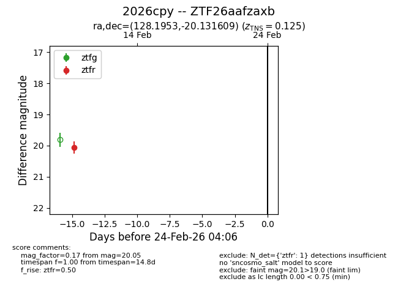
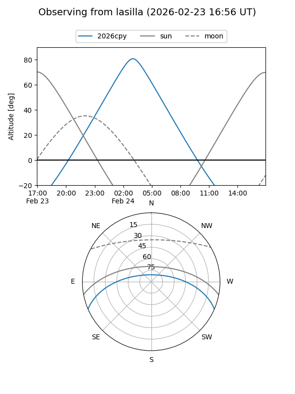
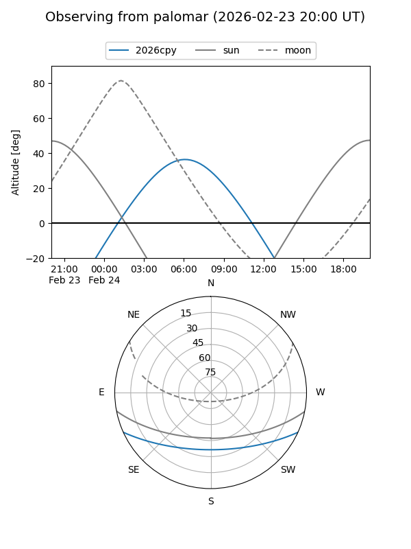

2026cpy
Target 2026cpy at 2026-02-24 09:08
Aliases and brokers:
FINK: link
Lasair: link
ALeRCE: link
TNS: link
YSE: link
alt names
ZTF26aafzaxb (ztf,fink_ztf)
2026cpy (tns,yse)
Coordinates:
equatorial (ra, dec) = 128.1953,-20.13161
equatorial (HMS+DMS) = 08:32:46.88,-20:07:53.79
galactic (l, b) = (242.9107,+11.57435)
Flags:
Photometry:
last ztfr=20.05
1 ztfr detections
Lightcurve

Visibility


Additional plots